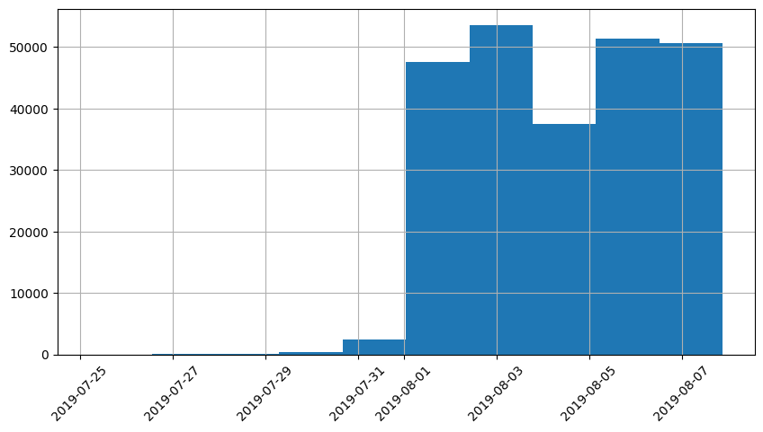

La empresa de productos alimenticios en la cual trabajamos nos pidio realizar una investigacion del comportamiento de los usuarios
-Preparar los datos
-Realizar análisis exploratorio
-Estudiar el embudo de ventas
-Realizar una prueba A/A/B (el cual consiste en 2 grupos de controlo y 1 de prueba)
-El dataframe df_data cuenta con 4 columnas inicialmente y 244126 registros
-Las 4 columnas son non-null y cuentan con la totalidad de los registros
-Los tipos de datos son correctos solo conciderar que la columna time esta con un formato de timestamp el cual se tiene que transformar a date para un mejor análisis lo cual se realizó
-Se encontraron 413 registros totalmente duplicados y se procedio a eliminarlos
-Se agrego como se comento una columna correspondiendo a la fecha y hora del evento y la fecha solamente en base a la columna time
-event_count cuenta la cantidad de eventos que se realizaron
-user_count cuenta la cantidad de usuarios unicos que realizaron un evento
-average_event_user es un merge entre event_count y user_count en la cual se agrego el promedio (event_count/user_count)
-En promedio hay 11 personas que visitan CartScreenAppear , 16 que visitan MainScreenAppear, 10 que visitan OffersScreenAppear, 10 que visitan PaymentScreenSuccessful y 1 que visitan Tutorial
-Con respecto a los promedios la mayoria es obviamente los de la la pagina principal ya que este es el punto de contacto, disminuye con respecto a ver las ofertas, el carro, el pago como tal y practicamente nadie ve el tutorial

-El periodo de prueba es bastante corto de finales de Julio hasta los primeros días de Agosto alrededor de 13 días
-Comprobando la frecuencia de las fechas solo se tienen datos significativos a partir del 1 de Agosto del 2019
-Teniendo en cuenta lo anterior se filtro a partir de esta fecha para que sean mas relavante el analisis
-Se verifico que el nuevo dataframe cuenta con 240887 en comparacion al viejo con 243713 por lo cual solo se descartaron 2826 registros
-Se verifico que estuvieran los 3 tipos de usuarios para realizar el analisis A/A/B
El orden de los eventos puede ser de la siguiente forma
1-MainScreenAppear (Pagina inicial de la tienda)
2-Tutorial (guia de como realizar el flujo de eventos hasta realizar una compra en teoria deberia verse luego de ingresar a la pagina)
3-OffersScreenAppear (Seccion de ofertas)
4-CartScreenAppear (Productos que estan en el carrito)
5-PaymentScreenSuccessful (realizar la compra de los productos del carrito)
Pero el evento del tutorial no influye en absoluto en el flujo normal ya que no es necesario verlo para poder realizar una compra.
Numero de visitas 7419
tutorial visto 46
Ofertas vistas 7
Productos al carrito 4
Pago exitoso 2
Numero de visitas 7419
Ofertas vistas 4201 56.62488205957676
Productos al carrito 1767 23.81722604124545
Pago exitoso 2 0.02695781102574471
tutorial visto 1 0.013478905512872355
-En cuanto al promedio con los datos filtrado se puede ver que no tuvo un cambio significativo
-en los 2 ordenes de eventos mostrados se ve que solo el 2.6% de las persona completo todos los eventos
-en el cual nos centraremos es en el orden (main,offer,cart,payment,tutorial) ya que el tutorial puede ser un evento mas bien totalmente opcional con esto me refiero a que el en el flujo no afecta
-a medida que avanza el flujo de los eventos se ve una disminucion de personas siendo las que completan una compra muy pocas
-No se puede decir que exista una diferencia estadistica de los grupos de control
-Las funciones realizan una evaluacion por evento entre 2 muestras viendo las proporciones de estas como se puede ver en los experimentos en todo los eventos de los grupos aunque la significancia este en 0.1 o 0.05 no se tiene razon para decir las proporciones entre los eventos de los grupos es diferente
-Segun los datos el experimento aunque tuviera una corta duración se tuvo una proporción casi igual en los diferentes grupos
-Por otro lado los cambios realizados para el experimento parecen no afectar el comportamiento del usuario por lo que se recomienda buscar uno con mayor impacto para realizar ventas.